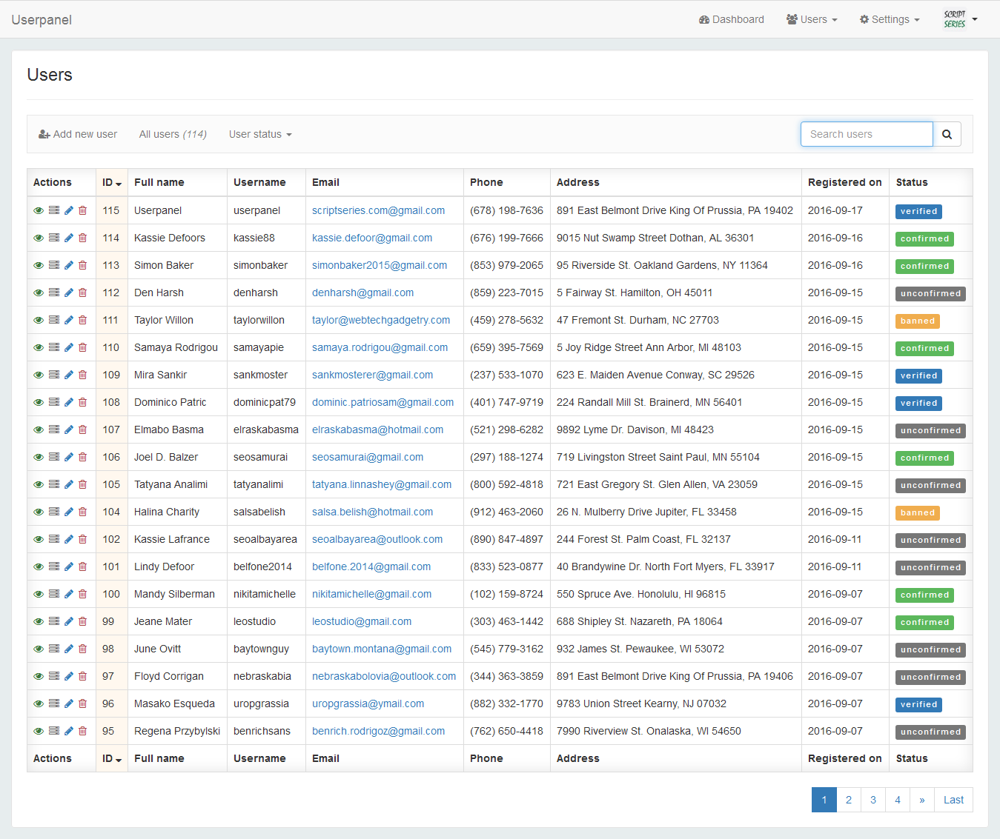
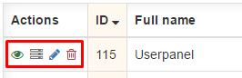
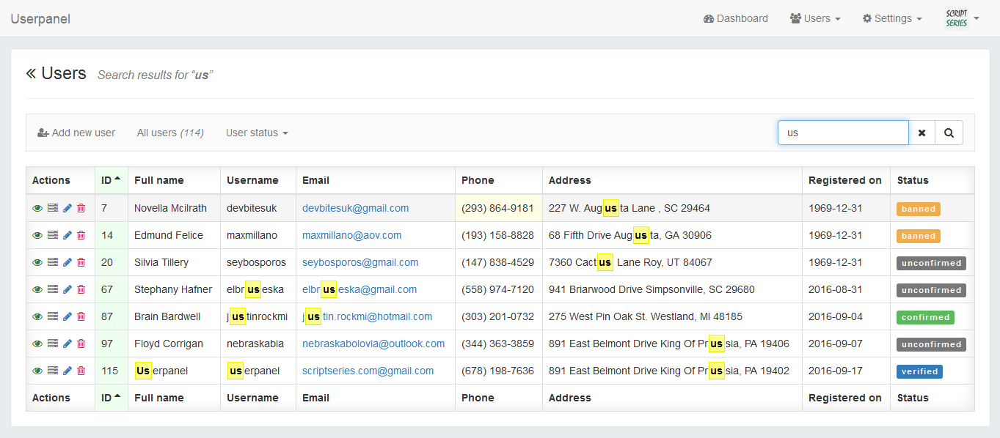
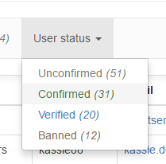
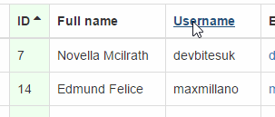
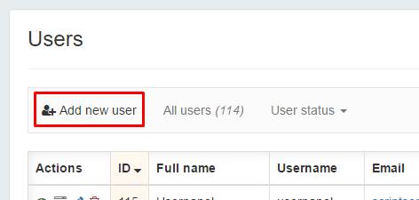

UserPanel administrators can easily search, filter, sort, add, edit and delete users through User management view. it also support for pagination.
UserPanel's Users list shows list of all registered users.
Each user row has a User actions section. so administrators can view user profile, view user sessions, edit user and delete user.
UserPanel administrators can search all the registered user by almost all user attributes. like name, address, date, time, user status, etc...UserPanel's search feature is very flexible. so you dont have to type exact term and letter case. UserPanel's search feature smart enough to identify what you are trying to search. you will hardly miss what you are searching for.
UserPanel's also offer cool highlighted search results. and that feature handle by serverside. that's mean it's not depends on JavaScript.
Users can filter by their user status.
Users can sort under any user attributes by ascending order or descending order. also UserPanel offer some cool color effects to easily indentify what is the current sorting field and sorting order.
UserPanel administrators can manually add new users through user management view by click on Add new user button.
{kind=link}
{kind=link}